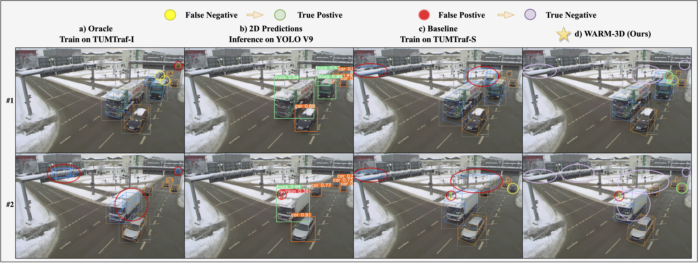

Visualization Comparision of WARM-3D method on TUMTraf Intersection dataset.

Existing roadside perception systems are limited by the absence of publicly available, high-quality 3D datasets. Exploring the use of cost-effective, extensive synthetic datasets offers a viable solution to tackle this challenge and enhance the performance of roadside monocular 3D detection. In this study, we introduce the TUMTraf Synthetic Dataset, offering a diverse and substantial collection of high-quality 3D data to augment scarce real-world datasets. Besides, we present WARM-3D, a concise yet effective framework to aid the Sim2Real domain transfer for roadside monocular 3D detection. Our method leverages cheap synthetic datasets and 2D labels from an off-the-shelf 2D detector for weak supervision. We show that WARM-3D significantly enhances performance on the TUMTraf Intersection Dataset, achieving a +12.40% increase in mAP 3D over the baseline and reaching 39.17 mAP 3D with only pseudo 2D supervision. With 2D GT as weak labels, WARM-3D even reaches 3D performance close to the Oracle baseline. Moreover, WARM-3D improves the ability of 3D detectors to recognize unseen samples across various real-world environments, highlighting its potential for practical applications.
Visualizations of WARM-3D on unseen snow samples.
Left: WARM-3D Right: Baseline Model
Visualizations of WARM-3D on TUMTraf-I test set Sequence 1.
Left: WARM-3D Right: Baseline Model
Visualizations of WARM-3D on TUMTraf-I test set Sequence 2.
Left: WARM-3D Right: Baseline Model
Visualizations of WARM-3D on TUMTraf-I test set Sequence 3.
Left: WARM-3D Right: Baseline Model
Visualizations of WARM-3D on TUMTraf-I test set Sequence 4.
Left: WARM-3D Right: Baseline Model